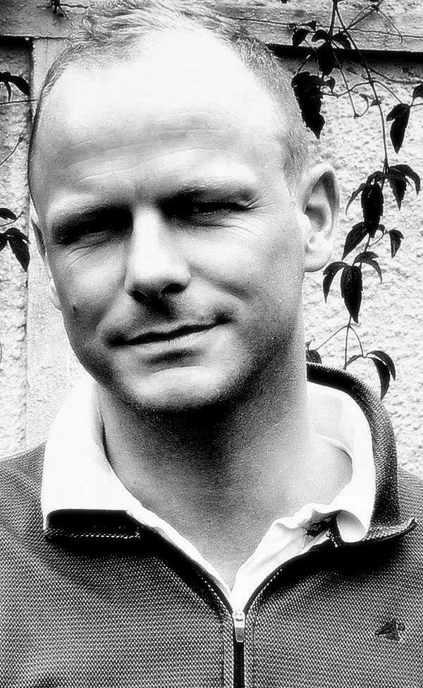
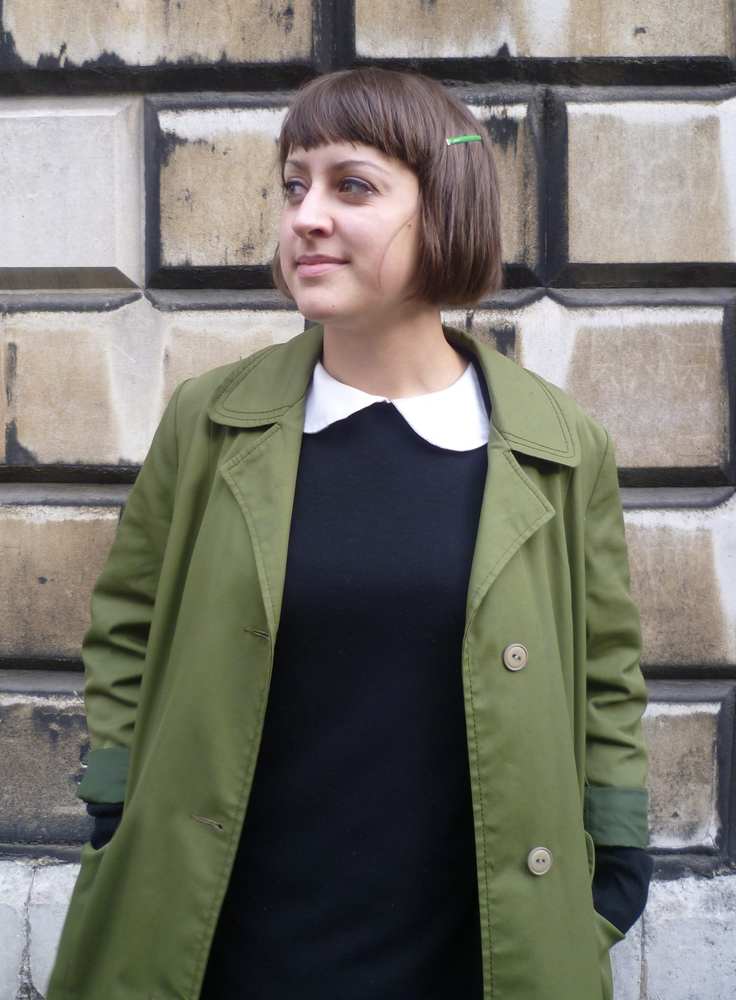
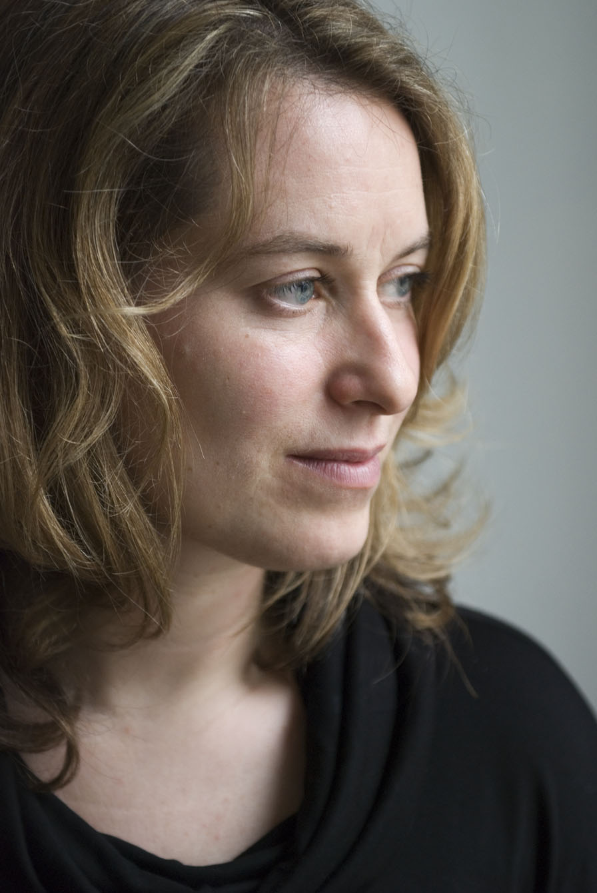
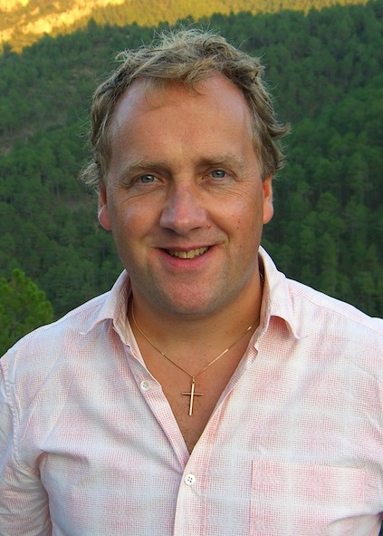

Today we can finally reveal the full judging panel for The Green Carnation Prize 2012. The judges are Dom Agius, photographer and DJ; Katie Allen, journalist, editor and writer; Catherine Hall, author and Simon Savidge, journalist, blogger and reviewer. The judges will be chaired by Rodney Troubridge, who has been in the bookselling industry for over 20 years.
   
{kind=link}
{kind=link}
{kind=link}
{kind=link}
{kind=link}
Rodney said, of chairing the prize in its third year, ‘I think this is a brave and interesting prize and am looking forward to reading what I hope will be some challenging writing that with luck will appeal to as many readers as possible.’ Catherine Hall, who won the prize last year, said she was ‘delighted’ to be a judge. Simon Savidge, who co-founded the prize in 2010 and now acts as its Honorary Director, is returning to judge for his third year and said ‘I can’t wait to see what 2012 holds in terms of the new judging panel, some exciting projects in and around the prize over the next few months and most importantly this years submitted books’.
The prize is now open for submissions of any novel published between January the 1st and December the 31st 2012 in hardback or paperback for the first time in the UK. The longlist of up to twelve books will be announced on Monday the 1st of October 2012.
For more information on the judging panel for 2012 you can visit the ‘Judges 2012’ page here.